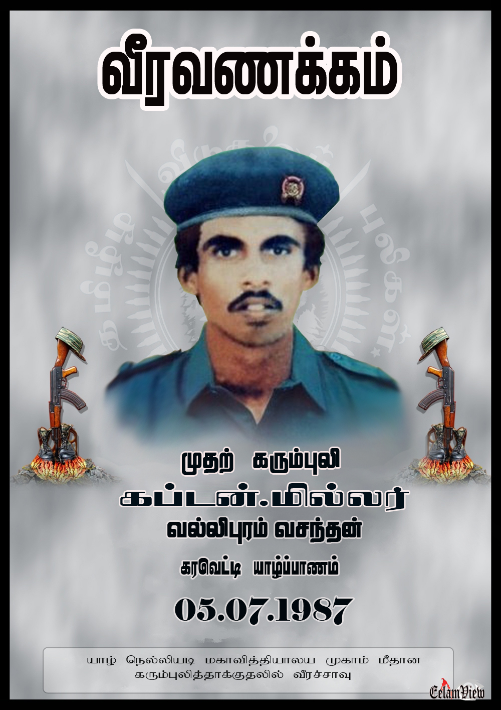

கரும்புலி கப்டன் மில்லர் வீர வரலாறு

உண்மைப் பெயர்: வல்லிபுரம் வசந்தன்
இயக்கப் பெயர்: கப்டன் மில்லர் (முதல் கரும்புலி)
வீரச்சாவு தேதி: 05.07.1987
வீரச்சாவடைந்த இடம்: நெல்லியடி மத்திய மகா வித்தியாலயம், யாழ்ப்பாணம்
வரலாற்றுக்குறிப்பு
தமிழீழ விடுதலைப் போராட்ட வரலாற்றில் முதன்முதலாகத் வெடிபொருட்கள் நிரப்பிய வாகனத்துடன் சென்று சிறிலங்கா படைமுகாம் மீது தற்கொடைத் தாக்குதல் நடத்திய முதல் தரைக்கரும்புலி கப்டன் மில்லர் ஆவார். இவரது நெல்லியடித் தாக்குதலே கரும்புலிகள் படைப்பிரிவின் தொடக்கமாக அமைந்தது.